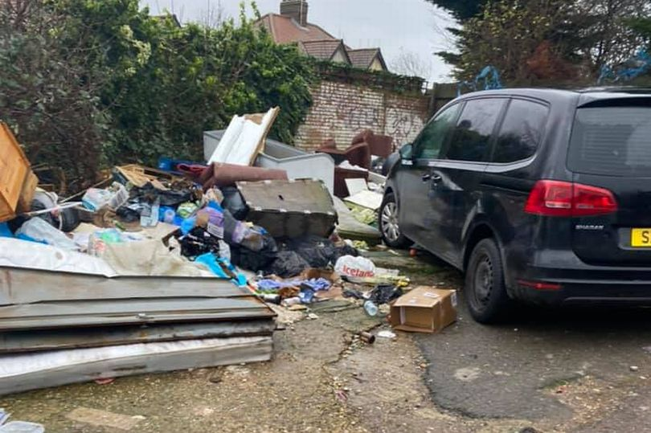
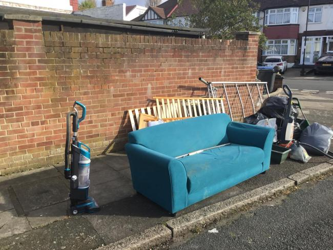
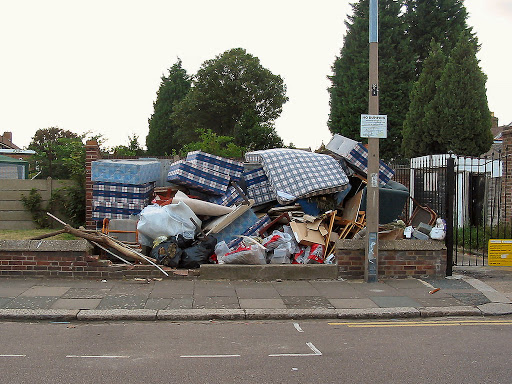

Fly Tipping In London
Fly tipping, also called illegal dumping, occurs when rubbish, trash, or other refuse is
disposed of improperly in a public environment. Fly tipping is typically driven by household waste
and bulk items, left in surreptitious locations by householders or unlicensed waste collectors.

40% of fly tipping incidents in the UK occur on roadways or streets, making these
locations the #1 destination for illegal dumping.
 in 2018/19, 65% of fly tipping incidents involved household waste. The most common size category
in that time was equivalent to a small van load.
in 2018/19, 65% of fly tipping incidents involved household waste. The most common size category
in that time was equivalent to a small van load.

Fly tipping fines and penalties generated around 1.1m in revenue in 2019/20.
this is only a fraction of the costs incurred due to fly tipping.

Many Councils offer waste disposal services for large items and other high-volume
needs. Check with your Council before you put it on the street!